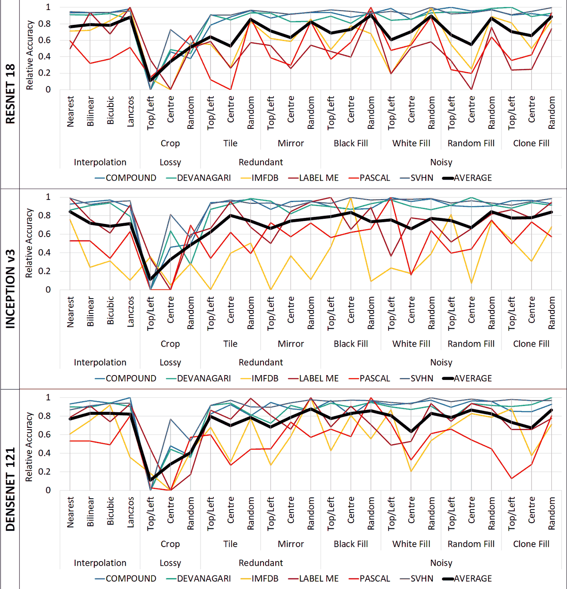

Cropping is the worst way to make a photo square for a neural network
Most image-recognition networks only accept pictures of one fixed size, usually a square. Real photos come in all shapes, so something has to give before a picture goes in. We tested 25 ways of turning a rectangular image into a square, on six datasets and three well-known networks, to see which ones help and which ones hurt.
The problem
A convolutional neural network (CNN) is the standard kind of network for pictures. It slides small filters over an image to pick out patterns. The layers near the end expect a fixed number of values, and that number depends on the size of the input. So a network built for 224 × 224 pixels cannot simply take a 4:3 photo. Inception-V3 expects 299 × 299 instead.
This causes trouble in practice. Images gathered by crowd-sourcing or web crawling come in many sizes. Phone cameras differ in resolution and in portrait or landscape mode. And a network pre-trained on ImageNet and reused for, say, surveillance footage has to be fed the shape it was trained on. The usual answer is to reshape the picture first. Few people ask which way of reshaping is best.
Twenty-five ways to make a square
We grouped the methods into four families, shown in the figure below on one photo of a bird.
- Interpolation stretches the whole image into a square, using nearest-neighbour, bilinear, bicubic or Lanczos resampling. Nothing is lost, but shapes get distorted. A white ball can start to look like an egg.
- Cropping cuts a square out of the image, from the top or left, the centre, or a random position. Shapes stay true, but the rest of the picture is thrown away.
- Redundant methods repeat the picture along its short side, either as tiles or as mirror images, until the square is full. These are rare in CNN work.
- Noisy methods shrink the picture to fit inside a square and fill the leftover space with black, white, random pixels, or pixels copied at random from the image itself (clone fill).

Positions matter for every method except interpolation. We tried the top or left edge, the centre, and a random position that changes with every training epoch. Counting those variants gives the 25 methods.
What we tested
We used six datasets: Bangla compound characters, Devanagari characters, street-view house numbers (SVHN), Indian movie faces (IMFDB), and objects cropped out of PASCAL and LabelMe photos. Each was split 3:1:1 into training, validation and test sets, with the same number of images per class. The networks were ResNet-18, Inception-V3 and DenseNet-121, with 11.7 million, 27.2 million and 8.0 million parameters. Six datasets, three networks and 25 methods make 450 networks, each trained from scratch for 100 epochs.
Raw accuracy varies a lot between datasets, so we scaled the test accuracy of each dataset to run from 0 (worst method) to 1 (best method). We did the same for how many epochs a network needed to reach its lowest validation loss. We did not aim for record accuracy, only a fair comparison.
What we found
Randomised positioning gave better test accuracy than fixed positions, in all three networks, though it took longer to converge. Seeing a different framing each epoch acts like data augmentation, which means making new training examples out of old ones. The effect was clearest for the natural-object datasets IMFDB, LabelMe and PASCAL.
Mirroring beat tiling on test accuracy. In ResNet-18 and Inception-V3 it also converged more slowly, probably for the same reason. We caution against mirroring for characters and text, because a flipped letter may change meaning, although the results showed this only weakly. Interpolation did better than cropping but fell short of the other families, especially on PASCAL, where stretching distorts the objects. Noisy methods did decently, but no fill method won across all three networks.

The network matters too. Inception-V3 and DenseNet-121 handled interpolation better than ResNet-18. Nearest-neighbour interpolation was the weakest interpolation choice for ResNet and DenseNet, but not for Inception-V3. Chi-square tests at the 0.05 level showed that several choices depend on the dataset. Character datasets and natural-image datasets reacted differently to the interpolation type and to tiling versus mirroring.
What it does not do
Every result is a single training run, because 450 networks were already a lot of training. The datasets are six, and the networks start from scratch rather than from pre-trained weights, so the picture could differ elsewhere. The numbers are also relative, so they rank methods inside each dataset but do not say how large the gap is in accuracy points. The paper offers guidance for choosing a reshaping method, not one winner for every case.
The paper starts from the fixed input size that CNNs impose, which gets in the way of data collection and deployment. Its aim is evidence for choosing a reshaping method, and the official code is available on GitHub.
Acknowledgements
This work is partially supported by the project sponsored by SERB (Government of India, order no. SB/S3/EECE/054/2016, dated 25/11/2016), and was carried out at the Centre for Microprocessor Application for Training Education and Research, CSE Department, Jadavpur University.
How to cite the paper
Swarnendu Ghosh, N Das, M Nasipuri (2019). Reshaping inputs for convolutional neural network: Some common and uncommon methods. Pattern Recognition, Vol. 93, pp. 79–94 · Elsevier.